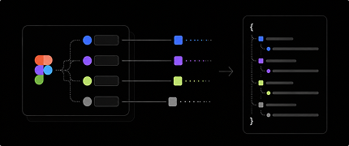

Token Bridge
publishing in progress View Source →

Variable to JSON Transformation Engine
Converts Figma variables into structured, implementation-ready tokens—applying transformation logic directly at export.
What's the problem
Figma variables are often raw, loosely typed, and inconsistent—requiring manual cleanup before use in code.
What this plugin does
Applies a transformation layer during export—producing clean, structured, and usable tokens from the start.
Key capabilities
- Infers token types automatically
- Normalizes values for runtime
- Preserves relationships (alias-aware)
- Separates color and opacity
- Organizes tokens (ref → sys → comp)
- Exports structured JSON
What changes
Before
- Raw exports
- Manual interoretation
- Flattened values
After
- Structured tokens
- Typed & normalized values
- Implementation-ready output
Output
The plugin generates structured JSON that is:
- Typed
- Alias-aware
- Mode-compatible
- Ready for integration
Why it matters
Eliminates manual cleanup and ensures tokens are consistent, connected, and ready for implementation.